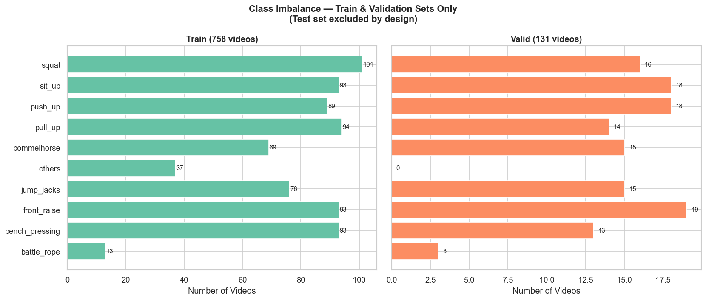
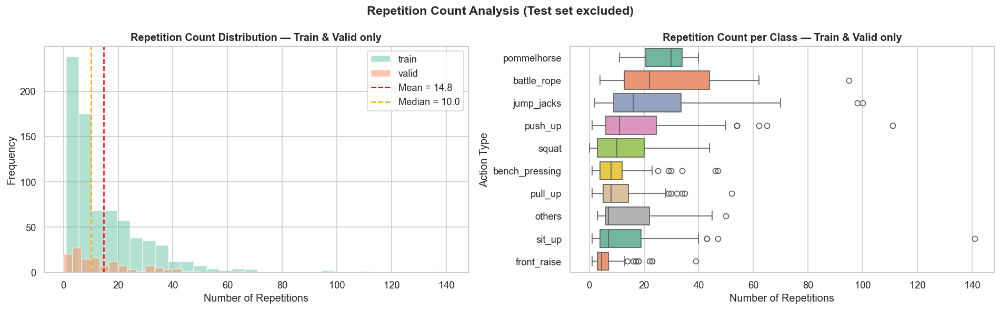
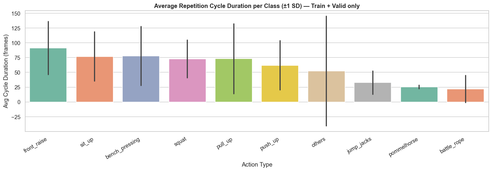
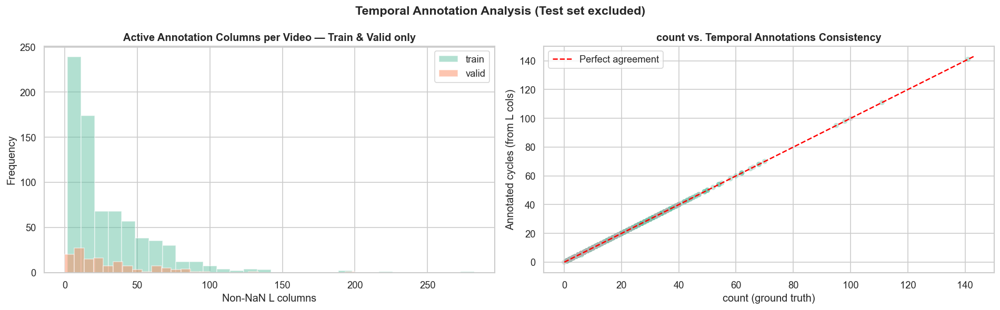

Class imbalance: train vs valid
High-level view of exercise distribution used to motivate balanced sampling and scoped exercise selection.

Quick access to the main exploratory-analysis assets used before cleaning, feature extraction, and modeling.
High-level view of exercise distribution used to motivate balanced sampling and scoped exercise selection.

Shows the long-tailed repetition-count problem that remains even when exercise counts are fairly balanced.

Used to reason about temporal resampling risk and per-exercise differences in repetition tempo.

Illustrates how the original LLSP annotations encode repetition intervals through the `L*` columns.

Manual inspection packs generated during EDA for selected exercises and cleanup review.
Additional supporting plots used to verify data partitions, annotation structure, and exercise-level outliers.
Use this page as the EDA landing surface when reviewing dataset assumptions, class imbalance, label structure, and the evidence behind later modeling decisions.